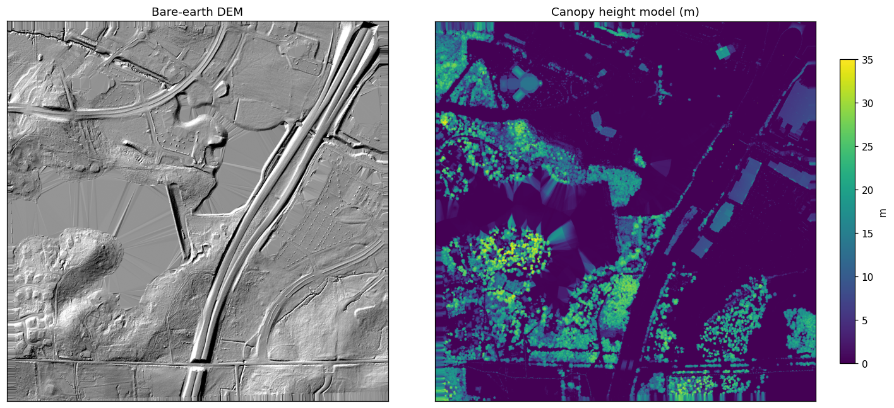
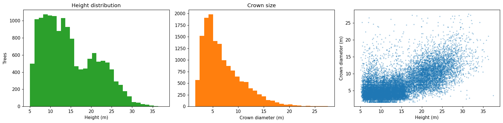
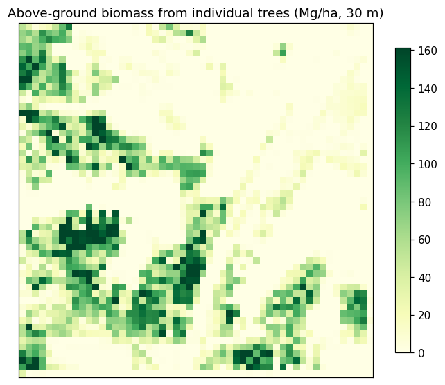
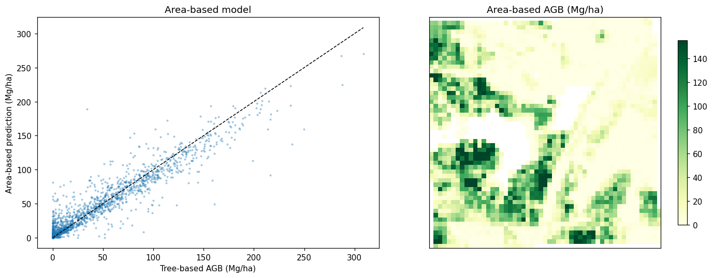

Code
import warnings
warnings.filterwarnings("ignore")
import numpy as np
import pandas as pd
import xarray as xr
import matplotlib.pyplot as plt
from pyproj import Transformer
import geolattice.rsense as rs
plt.rcParams.update({"figure.dpi": 110})
Produce a forest inventory for a 2.4 km² landscape from airborne lidar: terrain, canopy height, individual trees with heights and crown sizes, above-ground biomass and carbon per tree and per hectare, an area-based biomass model with prediction intervals, and a summary for a carbon or forest-management report.
Produce a forest inventory for a 2.4 km² landscape from airborne lidar: terrain, canopy height, individual trees with heights and crown sizes, above-ground biomass and carbon per tree and per hectare, an area-based biomass model with prediction intervals, and a summary for a carbon or forest-management report.
Skills combined: point cloud handling and units (Module 17), ground filtering, CHM, crown segmentation and area-based metrics (Module 18), regression with spatial CV and conformal prediction (Module 22).
Data (real): classified airborne lidar of Madison, Mississippi (4.1 M points).
Assumption to state in any report: biomass comes from a published crown-based allometry (Jucker et al. 2017, angiosperm equation), not from field plots, so absolute values carry the allometry’s uncertainty (≈ 20-30 % per tree). Field calibration plots would replace it in practice.
Installation. This notebook needs installation option 5 (core, spatial analysis, spatial statistics, geostatistics and remote sensing): pip install "geolattice[remote-sensing]". See “Installation options” in the GeoLattice README.
import warnings
warnings.filterwarnings("ignore")
import numpy as np
import pandas as pd
import xarray as xr
import matplotlib.pyplot as plt
from pyproj import Transformer
import geolattice.rsense as rs
plt.rcParams.update({"figure.dpi": 110})from pathlib import Path
import urllib.request
DATA = Path("../../../../Data/08_remote_sensing/08_11_Capstones")
DATA.mkdir(exist_ok=True)
GH = "https://github.com/opengeos/datasets/releases/download"
RAW = "https://raw.githubusercontent.com"
EOP = f"{RAW}/sentinel-hub/eo-learn/develop/example_data/TestEOPatch"
DF = f"{RAW}/weecology/DeepForest/main/src/deepforest/data"
URLS = {
"landsat_las_vegas.tif": f"{GH}/raster/landsat_las_vegas.tif",
**{f"pucallpa_{y}.tif": f"{RAW}/opengeos/data/main/landsat/{y}.tif" for y in range(1985, 2021, 5)},
"landsat.tif": f"{GH}/raster/landsat.tif", "dem_90m.tif": f"{GH}/book/dem_90m.tif",
"s2_bands.npy": f"{EOP}/data/BANDS-S2-L1C.npy", "s2_clp.npy": f"{EOP}/data/CLP.npy",
"s2_lulc.npy": f"{EOP}/mask_timeless/LULC.npy", "s2_timestamps.json": f"{EOP}/timestamps.json",
"s2_bbox.geojson": f"{EOP}/bbox.geojson",
**{f"australia.{e}": f"{DF}/australia.{e}" for e in ("tif", "shp", "shx", "dbf", "prj")},
"madison.copc.laz": f"{GH}/lidar/madison.copc.laz",
"ecostress_lst.tif": f"{GH}/raster/ECOv002_L2T_LSTE_26860_001_10SGD_20230401T203733_0710_01_LST.tif",
}
NLCD_URL = f"{GH}/raster/nlcd_2021_land_cover_90m.tif"
def fetch(name):
"""Download a tutorial dataset once and return its local path."""
path = DATA / name
if not path.exists():
print(f"Downloading {name} ...")
urllib.request.urlretrieve(URLS[name], path)
return path
def nlcd_for(template, name="nlcd_window"):
"""NLCD 2021 on the grid of `template` (windowed read of the CONUS COG, cached)."""
from rasterio.enums import Resampling
cache = DATA / f"{name}.tif"
if not cache.exists():
import rasterio, rioxarray
from rasterio.warp import transform_bounds
with rasterio.Env(GDAL_DISABLE_READDIR_ON_OPEN="EMPTY_DIR"):
src = rioxarray.open_rasterio("/vsicurl/" + NLCD_URL)
b = transform_bounds(template.rio.crs, src.rio.crs, *template.rio.bounds())
rs.write(src.rio.clip_box(*b).squeeze("band", drop=True).load(), cache, cog=False)
win = rs.read(cache, masked=False).squeeze("band", drop=True).rio.write_nodata(0)
return win.rio.reproject_match(template, resampling=Resampling.nearest, nodata=0).astype("int16")
def load_s2():
"""Real Sentinel-2 L1C time series (eo-learn TestEOPatch) as an xarray Dataset."""
import json
b = np.load(fetch("s2_bands.npy")); clp = np.load(fetch("s2_clp.npy"))[..., 0]
lulc = np.load(fetch("s2_lulc.npy"))[..., 0]
t = pd.to_datetime(json.load(open(fetch("s2_timestamps.json"))))
bb = json.load(open(fetch("s2_bbox.geojson")))["coordinates"][0]
names = ["B01", "B02", "B03", "B04", "B05", "B06", "B07", "B08", "B8A", "B09", "B10", "B11", "B12"]
x = min(p[0] for p in bb) + 10 * (np.arange(b.shape[2]) + 0.5)
y = max(p[1] for p in bb) - 10 * (np.arange(b.shape[1]) + 0.5)
ds = xr.Dataset({n: (("time", "y", "x"), b[..., i]) for i, n in enumerate(names)},
coords={"time": t, "y": y, "x": x}).rio.write_crs(32633)
ds["cloud_prob"] = (("time", "y", "x"), clp)
ds.attrs["pyrsense:sensor"] = "sentinel2"
lc = xr.DataArray(lulc, dims=("y", "x"), coords={"y": y, "x": x}).rio.write_crs(32633)
return ds, lcraw = rs.lidar.read_las(fetch("madison.copc.laz"))
lon, lat = Transformer.from_crs(raw.crs, 4326, always_xy=True).transform(np.mean(raw.bbox[::2]), np.mean(raw.bbox[1::2]))
utm = rs.core.utm_epsg(lon, lat)
x, y = Transformer.from_crs(raw.crs, utm, always_xy=True).transform(raw.x, raw.y)
pc = rs.PointCloud(np.asarray(x), np.asarray(y), np.asarray(raw.z) * 0.3048006096, dict(raw.attrs), utm).drop_noise()
area_ha = (pc.bbox[2] - pc.bbox[0]) * (pc.bbox[3] - pc.bbox[1]) / 1e4
print(f"{len(pc):,} points in EPSG:{utm}; area {area_ha:.0f} ha; density {len(pc) / (area_ha * 1e4):.2f} pts/m²")4,067,917 points in EPSG:32615; area 244 ha; density 1.67 pts/m²The provider’s ground classification is checked against SMRF before use; the CHM is built at 1 m with pit filling.
smrf = rs.lidar.smrf(pc, cell=1.0, slope=0.15, window=18)
valid = np.isin(pc["classification"], [2, 3, 4])
agree = ((smrf["classification"] == 2) == (pc["classification"] == 2))[valid].mean()
print(f"SMRF vs provider ground labels: {agree:.1%} agreement")
dem = rs.lidar.dem(pc, 1.0)
chm = rs.lidar.chm(rs.lidar.dsm(pc, 1.0, bounds=pc.bbox), dem)
fig, axes = plt.subplots(1, 2, figsize=(14, 6))
rs.viz.plot_raster(rs.lidar.hillshade(dem), ax=axes[0], cmap="gray", colorbar=False, title="Bare-earth DEM")
rs.viz.plot_raster(chm, ax=axes[1], cmap="viridis", vmax=35, title="Canopy height model (m)")
for a in axes: a.set_xticks([]); a.set_yticks([])
plt.tight_layout(); plt.show()
print(f"Canopy cover (> 5 m): {float((chm > 5).mean()):.0%}")SMRF vs provider ground labels: 94.7% agreement
Canopy cover (> 5 m): 29%tops = rs.lidar.detect_trees(chm, min_height=5)
labels, crowns = rs.lidar.segment_crowns(chm, tops, min_height=3)
n_all = len(crowns)
merged = crowns.area_m2 > 600 # > ~28 m crown diameter: merged crowns or non-tree objects
crowns = crowns[(crowns.area_m2 >= 2) & (crowns.height >= 5) & ~merged].reset_index(drop=True)
print(f"{len(crowns):,} trees ≥ 5 m; {len(crowns) / area_ha:.0f} trees/ha "
f"({int(merged.sum())} implausibly large segments removed as merged crowns)")
fig, axes = plt.subplots(1, 3, figsize=(16, 4))
axes[0].hist(crowns.height, bins=30, color="C2"); axes[0].set(xlabel="Height (m)", ylabel="Trees", title="Height distribution")
axes[1].hist(crowns.diameter_m, bins=30, color="C1"); axes[1].set(xlabel="Crown diameter (m)", title="Crown size")
axes[2].scatter(crowns.height, crowns.diameter_m, s=3, alpha=0.3); axes[2].set(xlabel="Height (m)", ylabel="Crown diameter (m)")
plt.tight_layout(); plt.show()
crowns[["height", "diameter_m", "area_m2"]].describe().loc[["mean", "50%", "max"]].round(1)14,876 trees ≥ 5 m; 61 trees/ha (23 implausibly large segments removed as merged crowns)
| height | diameter_m | area_m2 | |
|---|---|---|---|
| mean | 14.8 | 7.0 | 50.8 |
| 50% | 13.5 | 6.0 | 28.0 |
| max | 37.5 | 27.5 | 596.0 |
Jucker et al. (2017) relate above-ground biomass to the product of tree height H and crown diameter CD, without needing stem diameter: for angiosperms AGB (kg) = 0.016 · (H · CD)^2.013 · exp(0.204²/2). Carbon is taken as 47 % of dry biomass (IPCC default).
crowns["agb_kg"] = 0.016 * (crowns.height * crowns.diameter_m) ** 2.013 * np.exp(0.204 ** 2 / 2)
crowns["carbon_kg"] = 0.47 * crowns.agb_kg
cent = crowns.geometry.centroid
cell = 30.0
x0, y1 = pc.bbox[0], pc.bbox[3]
crowns["col"] = ((cent.x - x0) // cell).astype(int); crowns["row"] = ((y1 - cent.y) // cell).astype(int)
H = int(np.ceil((pc.bbox[3] - pc.bbox[1]) / cell)); W = int(np.ceil((pc.bbox[2] - pc.bbox[0]) / cell))
grid = np.zeros((H, W))
np.add.at(grid, (crowns.row.clip(0, H - 1), crowns.col.clip(0, W - 1)), crowns.agb_kg)
agb_ha = xr.DataArray(grid / 1000 / (cell * cell / 1e4), dims=("y", "x"),
coords={"y": y1 - cell * (np.arange(H) + 0.5), "x": x0 + cell * (np.arange(W) + 0.5)},
name="AGB (Mg/ha)").rio.write_crs(utm)
fig, ax = plt.subplots(figsize=(7.5, 6.5))
rs.viz.plot_raster(agb_ha, ax=ax, cmap="YlGn", title="Above-ground biomass from individual trees (Mg/ha, 30 m)")
ax.set_xticks([]); ax.set_yticks([]); plt.show()
forest_cells = agb_ha > 10
print(f"Total AGB {crowns.agb_kg.sum() / 1000:,.0f} Mg; carbon {crowns.carbon_kg.sum() / 1000:,.0f} Mg C "
f"(≈ {crowns.carbon_kg.sum() / 1000 * 44 / 12:,.0f} Mg CO₂e); mean AGB in forested cells "
f"{float(agb_ha.where(forest_cells).mean()):.0f} Mg/ha")
Total AGB 7,122 Mg; carbon 3,347 Mg C (≈ 12,273 Mg CO₂e); mean AGB in forested cells 69 Mg/haInventories usually predict biomass per cell from area-based lidar metrics, which is faster and less sensitive to segmentation errors. We use 30 m cells, close to typical field-plot size, so that trees straddling cell edges matter less. We model the tree-based AGB from height percentiles, cover and density, validate with spatial CV, and wrap the model in split-conformal prediction to obtain 90 % prediction intervals per cell.
pcn = rs.lidar.normalize_heights(pc, dem)
met = rs.lidar.grid_metrics(pcn, res=cell, metrics=("hmax", "p95", "p75", "p50", "hstd", "cover", "density"))
met = xr.Dataset({k: v.rio.write_crs(utm).rio.reproject_match(agb_ha) for k, v in met.items()})
# merge on coordinates (never rely on array order: to_dataframe sorts y ascending)
X = xr.merge([met, agb_ha.rename("agb")]).to_dataframe().drop(columns="spatial_ref", errors="ignore").reset_index().dropna()
feats = ["hmax", "p95", "p75", "p50", "hstd", "cover", "density"]
Xf = X[feats].copy(); Xf.attrs["coords"] = X[["x", "y"]].to_numpy()
cv = rs.xai.cross_validate_spatial(rs.classify.Classifier("rf", task="regression", n_estimators=300, random_state=0),
Xf, X.agb.values, rs.xai.SpatialBlockCV(5, 300, seed=0))
print(f"Spatial-CV R² of the area-based model: {cv['mean']:.2f} ± {cv['std']:.2f}")
cr = rs.xai.ConformalRegressor(rs.classify.Classifier("rf", task="regression", n_estimators=300, random_state=0),
alpha=0.1).fit(Xf, X.agb.values)
iv = cr.predict_interval(Xf)
cov = rs.xai.coverage(X.agb.values, iv.lower, iv.upper)
print(f"90 % interval half-width ±{cr.q_:.0f} Mg/ha; empirical coverage {cov:.1%}")
pred = X.assign(pred=iv.pred.values).set_index(["y", "x"])["pred"].to_xarray().reindex_like(agb_ha)
fig, axes = plt.subplots(1, 2, figsize=(13, 5))
axes[0].scatter(X.agb, iv.pred, s=3, alpha=0.3); axes[0].plot([0, X.agb.max()], [0, X.agb.max()], "k--", lw=1)
axes[0].set(xlabel="Tree-based AGB (Mg/ha)", ylabel="Area-based prediction (Mg/ha)", title="Area-based model")
rs.viz.plot_raster(pred, ax=axes[1], cmap="YlGn", title="Area-based AGB (Mg/ha)")
axes[1].set_xticks([]); axes[1].set_yticks([])
plt.tight_layout(); plt.show()Spatial-CV R² of the area-based model: 0.72 ± 0.04
90 % interval half-width ±42 Mg/ha; empirical coverage 97.3%
tot = crowns.agb_kg.sum() / 1000
report = {
"Area": f"{area_ha:.0f} ha (canopy cover > 5 m: {float((chm > 5).mean()):.0%})",
"Trees ≥ 5 m": f"{len(crowns):,} ({len(crowns) / area_ha:.0f}/ha); median height {crowns.height.median():.1f} m",
"Above-ground biomass": f"{tot:,.0f} Mg ({tot / area_ha:.0f} Mg/ha landscape mean)",
"Carbon": f"{0.47 * tot:,.0f} Mg C ≈ {0.47 * tot * 44 / 12:,.0f} Mg CO₂e",
"Area-based model (spatial CV R²)": f"{cv['mean']:.2f}",
"Per-cell 90 % prediction interval": f"±{cr.q_:.0f} Mg/ha (coverage {cov:.0%})",
"Main uncertainty": "Allometry (no field plots); crown segmentation merges/splits in dense stands",
}
pd.Series(report).to_frame("value")| value | |
|---|---|
| Area | 244 ha (canopy cover > 5 m: 29%) |
| Trees ≥ 5 m | 14,876 (61/ha); median height 13.5 m |
| Above-ground biomass | 7,122 Mg (29 Mg/ha landscape mean) |
| Carbon | 3,347 Mg C ≈ 12,273 Mg CO₂e |
| Area-based model (spatial CV R²) | 0.72 |
| Per-cell 90 % prediction interval | ±42 Mg/ha (coverage 97%) |
| Main uncertainty | Allometry (no field plots); crown segmentation... |
Extensions: calibrate with field plots (replace the allometry); add GEDI L4A footprints to extend beyond the lidar extent (Module 21); repeat with a later lidar survey to estimate growth and removals (biomass change).